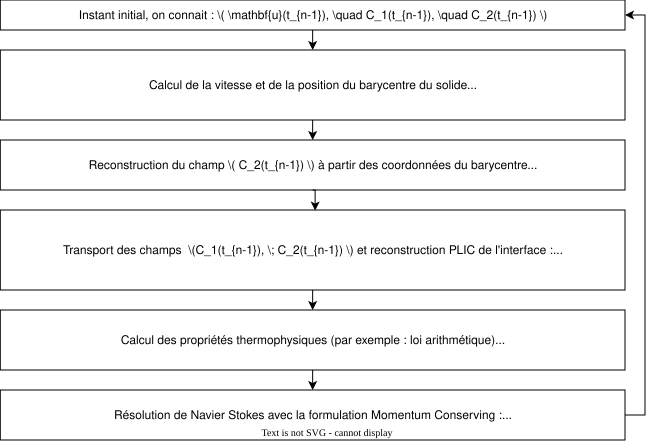
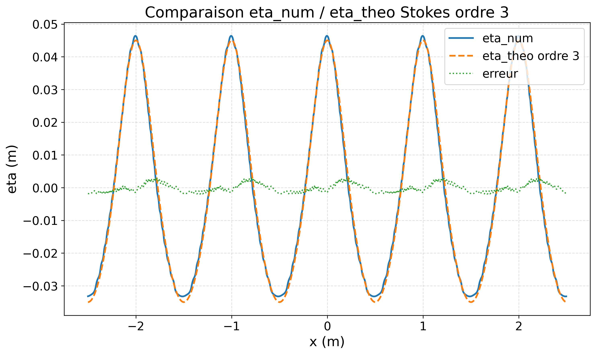
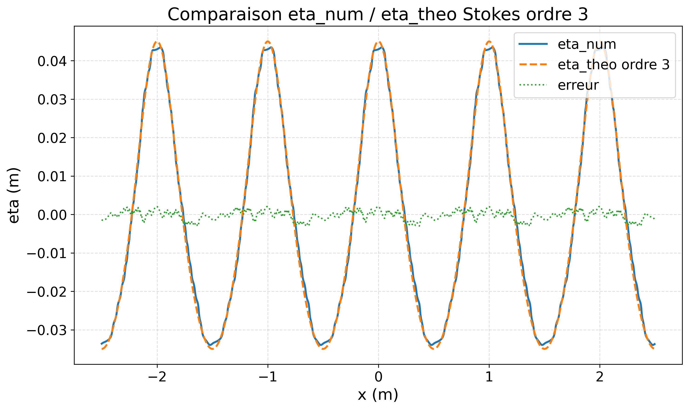
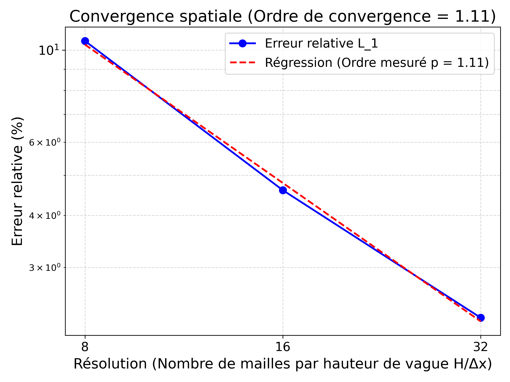
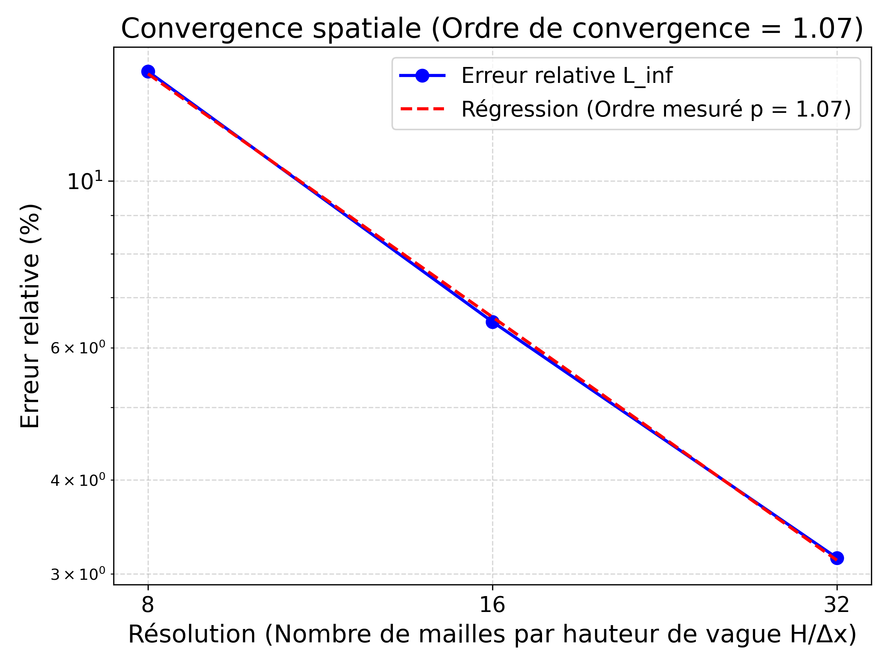

Equations régissant la dynamique du problème en présence de particule
Dans le domaine \(\Omega_{\text{tot}}= \Omega_f \cup \Omega_p\), on résout les équations de Navier-Stokes incompressible, tout en imposant un mouvement de corps rigide dans la région occupée par le solide\(\Omega_p\). \[
\nabla\cdot \mathbf{u} =0 \quad \forall \mathbf{x} \in \Omega_{\text{tot}}\]\[
{\color{red}{\rho_{\text{eff}}}} \left( \frac{\partial \mathbf{u}}{\partial t} + \mathbf{u} \cdot \nabla \mathbf{u} \right) = -\nabla p + \nabla \cdot \left[ {\color{red}{\mu_{\text{eff}}}} (\nabla \mathbf{u} + \left(\nabla \mathbf{u}\right)^T) \right] + {\color{red}{\rho_{\text{eff}}}} \mathbf{g} \quad \forall \mathbf{x} \in \Omega_{\text{tot}}
\]\[
\mathbf{u} = \mathbf{U} + \boldsymbol{\omega} \times \mathbf{OM} \quad \forall \mathbf{x} \in \Omega_p
\]
On transporte deux champs de fraction volumique : \(C_1\) pour l’eau, et \(C_2\) pour le solide.
Mouvement de corps rigide : pénalisation tensorielle
Idée : imposer un mouvement de corps rigide dans la région occupée par le solide où \({\color{blue}{C_2=1}}\) et \({\color{blue}{C_1=0}}\).
(Dans la région solide, \({\color{red}{\rho_{\text{eff}}}} = {\color{blue}{\rho_{\text{solide}}}}\) et \({\color{red}{\mu_{\text{eff}}}}={\color{blue}{\mu_{\text{solide}}}}\))
Algorithme de résolution au sein d’un pas de temps \(\Delta t\):

Formulation Momentum Conserving (El Ouafa et al. (2026))
Interpolation : La densité \(\rho_{\text{eff}}\) (obtenue par la VOF) est interpolée vers les faces des cellules. On obtient la densité exacte sur la grille décalée, notée \(\rho_{\text{eff}}^n\).
Synchronisation initiale : Calcul de la quantité de mouvement aux faces \((\rho_{\text{eff}} \mathbf{u})^n\).
Transport prédictif : Transport de la masse et de la quantité de mouvement pour obtenir les champs prédictifs \(\rho_{\text{eff}} ^\star\) et \((\rho_{\text{eff}} \textbf{u})^\star\) (via un intégrateur temporel très stable de type SSP-RK3) : \[
\frac{\partial \rho_{\text{eff}} ^\star}{\partial t} + \nabla \cdot (\rho_{\text{eff}} ^\star \mathbf{u}) =0 \qquad (\text{On résout pour} \; \mathbf{\rho_{\text{eff}} ^\star})
\]\[
\frac{\partial (\rho_{\text{eff}} \mathbf{u})^\star}{\partial t} + \nabla \cdot ((\rho_{\text{eff}} \mathbf{u})^\star \otimes \mathbf{u}) = \mathbf{0} \qquad (\text{On résout pour} \; \mathbf{(\rho_{\text{eff}} \mathbf{u})^\star})
\]
Résolution de la physique : Insertion de \(\rho_{\text{eff}} ^\star\) et \((\rho_{\text{eff}} \textbf{u})^\star\) dans le terme inertiel de Navier-Stokes. Le système de type Stokes résout ensuite la vraie vitesse \(\mathbf{u}^{n+1}\) et la pression \(p^{n+1}\) : \[
\frac{\rho_{\text{eff}}^\star \mathbf{u}^{n+1} - (\rho_{\text{eff}}\mathbf{u})^\star}{\Delta t} = - \nabla p^{n+1} + \nabla \cdot [\mu_{\text{eff}}(\nabla \mathbf{u}^{n+1} + (\nabla \mathbf{u}^{n+1})^T)] + \rho_{\text{eff}}^\star \mathbf{g}
\]\[
\nabla \cdot \mathbf{u}^{n+1} = 0
\]
Etude de l’ascension d’un cylindre 2D
Cylindre 2D léger en ascension dans un fluide
On étudie les travaux de Rahmani and Wachs (2014) en 2D
Enfin, pour la maille interfaciale, on initialise :
\[C_1 = \frac{\text{surface totale eau}}{\text{aire totale de la maille}}=\frac{\text{somme des aires bleues d'eau}}{\Delta x \Delta y}\]
Initialisation de la vague de Stokes (fin)
Pour que la vague puisse se propager dans le domaine de calcul, on doit aussi initialiser le champ de vitesse (avec \(A=\frac{ag}{\omega}\)) (voir Fenton (1985)):
Exemple de vague simulée pour : \(h\)=1 m, \(a\)=0.04 m, \(\lambda\)=1 m :
Validation de la forme de la vague
On travaille avec : \(a = 0.04 \; \text{m}\), \(h = 1 \; \text{m}\), \(\lambda = 1 \; \text{m}\) (\(k = 2\pi \; m^{-1}\)) pour s’assurer que la vague ne se brise pas (critère de Stokes : déferlement quand \(ka \geq 0.446\), dans notre cas : \(ka \approx 0.25\))
Validation de la vague simulée par comparaison au profil théorique après T périodes de simulation, avec \(T= \frac{2\pi}{\omega} = \frac{2\pi}{\sqrt{gk\tanh(kh)\left[1+(ka)^2\left(\alpha^2+\frac{9}{8}(\alpha^2-1)^2\right)\right]}}\)

Comparaison après T=3 périodes

Comparaison après T=10 périodes
Etude de convergence en maillage après 3 périodes de vague
Erreurs \(L_{\infty}\) et \(L_2\) en fonction du maillage
Mailles/Hauteur de vague
\(\Delta x = \Delta y\)
\(\Delta t\)
Erreur relative \(L_{1}\)
Erreur relative \(L_{2}\)
Erreur relative \(L_{\infty}\)
8
\(1 \times 10^{-2}\)
\(2 \times 10^{-3}\)
10.5%
11%
14%
16
\(5 \times 10^{-3}\)
\(1 \times 10^{-3}\)
4.6%
4.8%
6.5%
32
\(2,5 \times 10^{-3}\)
\(5 \times 10^{-4}\)
2.27%
2.4%
3.15%

Erreur \(L_{1}\)
Erreur \(L_2\)

Erreur \(L_{\infty}\)
Bilan et perspectives
Perspectives :
Faire une validation après 50 / 100 périodes de vague pour vérifier la stabilité du solveur.
Validation du profil de vitesse dans l’eau à la théorie.
Dans la suite :
Loi géométrique pour la viscosité effective.
Maillage retenu : 32 mailles/hauteur de vague, soit 60 mailles par diamètre du cylindre (\(\Delta x = 2.5 \times 10^{-3}\) m).
Ajout d’une particule solide sur la vague de Stokes
Première simulation
Perspectives d’étude
Comparaison des trajectoires à des résultats avec des particules sans masse.
Comparaison de la dérive de position horizontale à la littérature.
Evaluation des forces exercées sur la particule par la vague.
Références
Caltagirone, Jean-Paul, and Stéphane Vincent. 2001. “Sur Une Méthode de Pénalisation Tensorielle Pour La Résolution Des Équations de Navier–Stokes.”Comptes Rendus de l’Académie Des Sciences - Series IIB - Mechanics 329 (8): 607–13. https://doi.org/https://doi.org/10.1016/S1620-7742(01)01374-5.
El Ouafa, Simon, Syphax Fereka, Stéphane Vincent, Benoît Trouette, Eric Chénier, and Vincent Le Chenadec. 2026. “Algebraic Momentum-Preserving Scheme for Incompressible Two-Phase Flows at Large Density and Viscosity Ratios: Application to Droplet Impact Problems.”Computers & Fluids 314: 107083. https://doi.org/https://doi.org/10.1016/j.compfluid.2026.107083.
Maskell, S. J., and F. Ursell. 1970. “The Transient Motion of a Floating Body.”Journal of Fluid Mechanics 44 (2): 303–13. https://doi.org/10.1017/S0022112070001842.
Patankar, N. A., P. Singh, D. D. Joseph, R. Glowinski, and T.-W. Pan. 2000. “A New Formulation of the Distributed Lagrange Multiplier/Fictitious Domain Method for Particulate Flows.”International Journal of Multiphase Flow 26 (9): 1509–24.
Rahmani, Mona, and Anthony Wachs. 2014. “Free Falling and Rising of Spherical and Angular Particles.”Physics of Fluids 26 (August): 083301. https://doi.org/10.1063/1.4892840.
Sharma, N., and N. A. Patankar. 2005. “A Fast Computation Technique for the Direct Numerical Simulation of Rigid Particulate Flows.”Journal of Computational Physics 205 (2): 439–57.
Soydan, Ahmet, Widar W. Wang, and Hans Bihs. 2025. “An Improved Direct Forcing Immersed Boundary Method for Floating Body Simulations in Waves.”Applied Ocean Research 158: 104523. https://doi.org/https://doi.org/10.1016/j.apor.2025.104523.
Vincent, S. 2007. “Local Penalty Methods for Flows Interacting with Moving Solids at High Reynolds Numbers.”Computers & Fluids, ahead of print. https://doi.org/10.1016/j.compfluid.2006.04.006.


 Espace de départ
Espace de départ Première subdivision
Première subdivision Deuxième subdivision
Deuxième subdivision Troisième subdivision
Troisième subdivision